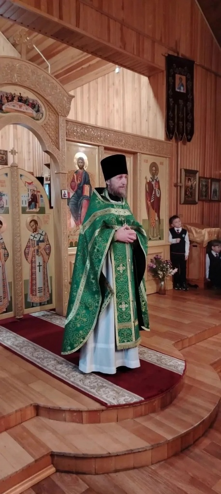
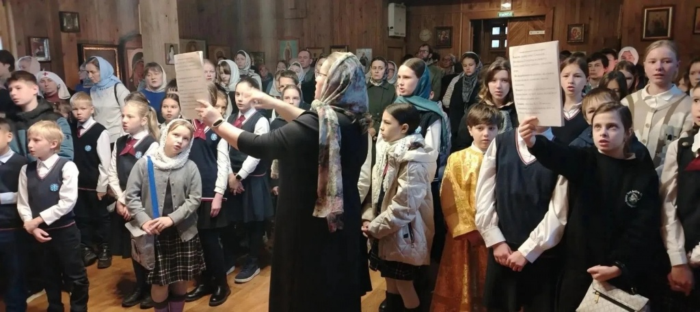
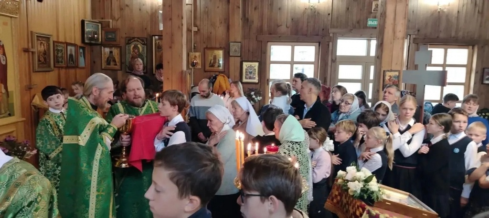

8 октября, в день памяти преставления преподобного Сергия Радонежского, в храме Всех святых в земле Русской просиявших в Академгородке состоялось праздничное богослужение.
8 октября, в день памяти преставления преподобного Сергия Радонежского, в храме Всех святых в земле Русской просиявших в Академгородке состоялось праздничное богослужение.
В этот день Православная гимназия во имя преподобного Сергия Радонежского отмечает свои именины. Гимназия была учреждена в 1992 году, в год 600-летия преставления преподобного Сергия, тогда же в храме был освящён второй престол в его честь.
Утром гимназисты, преподаватели и сотрудники собрались на Божественную литургию, чтобы молитвенно почтить память своего Небесного покровителя. Учащиеся пели в составе трёх хоров, читали Апостол, несли пономарские послушания. После Литургии состоялся праздничный крестный ход.
Празднование продолжилось в гимназии чтением акафиста преподобному Сергию. Еженедельное чтение акафиста в часовне в честь преподобного — одна из традиций гимназии. В праздничный день к молитве присоединились все учащиеся среднего и старшего звена. Для младших классов прошли мероприятия, посвящённые жизни и духовному наследию преподобного Сергия Радонежского.


